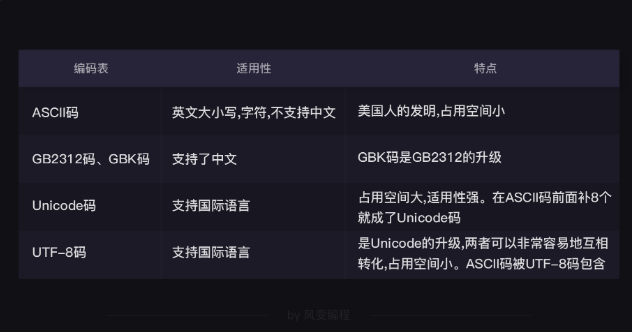

编码
————————————————————————————————
让只认识0和1的计算机，能够理解我们人类使用的语言符号，
并且将数据转换为二进制进行存储和传输
人类语言到计算机语言转换的形式，就叫做编码表
编码表
第0，计算机是有自己的工作区的，这个工作区被称为“内存”。
数据在内存当中处理时，使用的格式是Unicode，统一标准。
#Python3当中，程序处理我们输入的字符串，是默认使用Unicode编码
第1，数据在硬盘上存储，或者是在网络上传输时，用的是UTF-8，因为节省空间
第2，一些中文的文件和中文网站，还在使用GBK，和GB2312
——————————————————————————————————
encode()和decode()
编码，即将人类语言转换为计算机语言，就是【编码】encode()；
反之，就是【解码】decode()
1 print('我'.encode('utf-8'))
2 b'\xe6\x88\x91'
3
4 print(b'\xe6\x88\x91'.decode('utf-8'))
5 我所谓的编码，其实本质就是把str（字符串）类型的数据，
利用不同的编码表，转换成bytes（字节）类型的数据。
1 print(type('我'))
2 print(type(b'\xe6\x88\x91'))
3 <class 'str'>
4 <class 'bytes'>